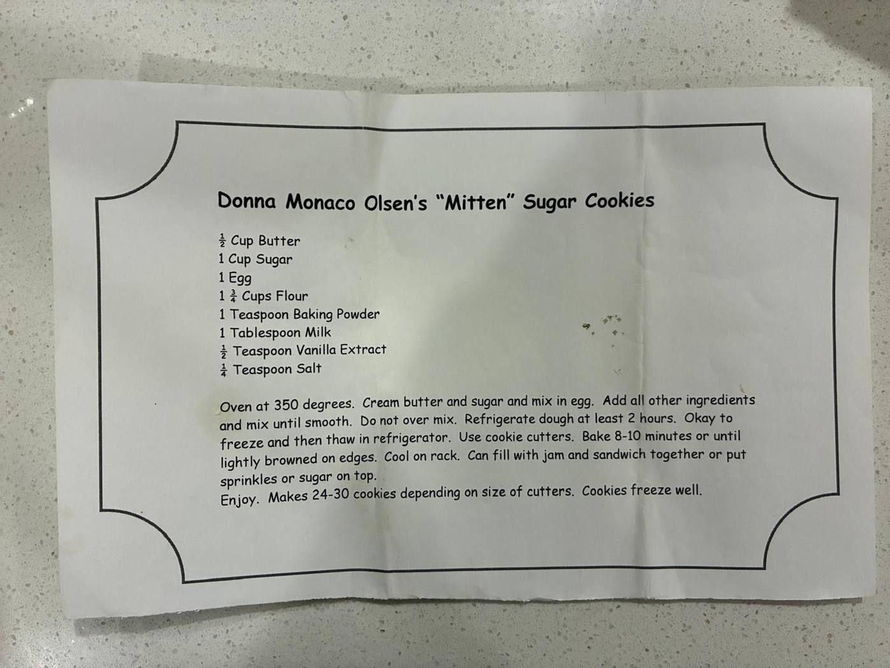

Desserts
Donna Monaco Olsen's "Mitten" Sugar Cookies
From the kitchen of Mom
Oven350°F
Bake8–10 min
Chillat least 2 hours
Makes24–30 cookies

Mom's original card · tap to enlarge
Ingredients
Method tap a step to mark it done
- Cream the butter and sugar, then mix in the egg.
- Add all the other ingredients and mix until smooth. Do not overmix.
- Refrigerate the dough at least 2 hours. (It's okay to freeze it and then thaw it in the refrigerator.)
- Heat the oven to 350°F. Roll out the dough and cut with cookie cutters.
- Bake 8–10 minutes, or until lightly browned on the edges.
- Cool on a rack.
Mom’s tips
- Fill with jam and sandwich together, or put sprinkles or sugar on top.
- Makes 24–30 cookies depending on the size of the cutters.
- Cookies freeze well. Enjoy!